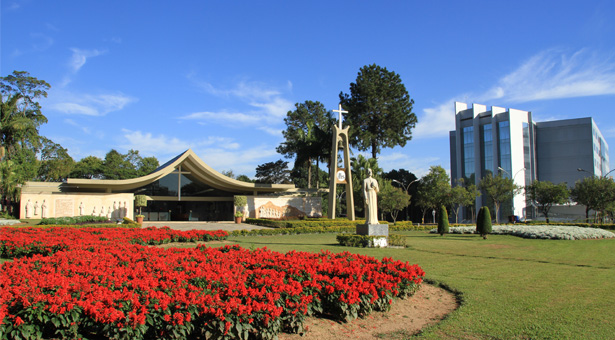

Álvaro Ricardo Souza Pessolato da Silva
Sou consultor SAP e estudante universitário na FEI. Atuo na área de planejamento de produção, mensageria EDI e processos industriais. Esta página é o meu portfólio profissional.
Tenho interesse na área de ciência e tratamento de dados, inteligência artificial e automação de atividades.
Minhas Habilidades:
- SAP PP e SAP S/4HANA
- Interfaces de Mensageria (IDoc, EDI)
- JIT/JIS
- Inglês
Imagens:


